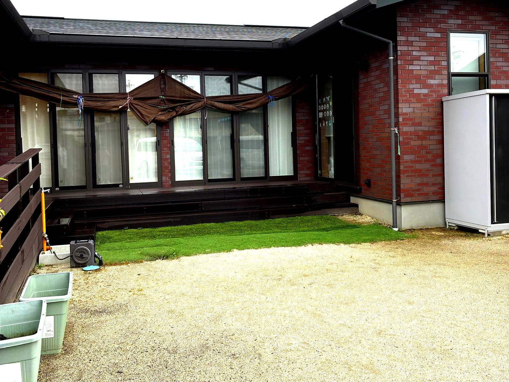
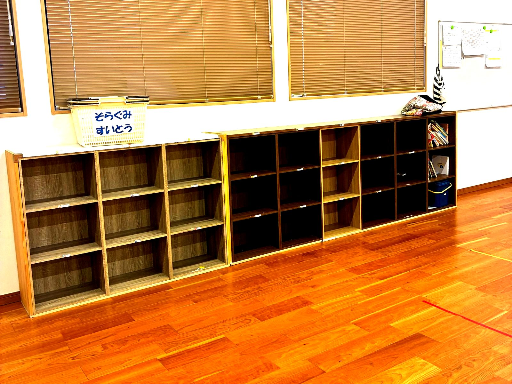
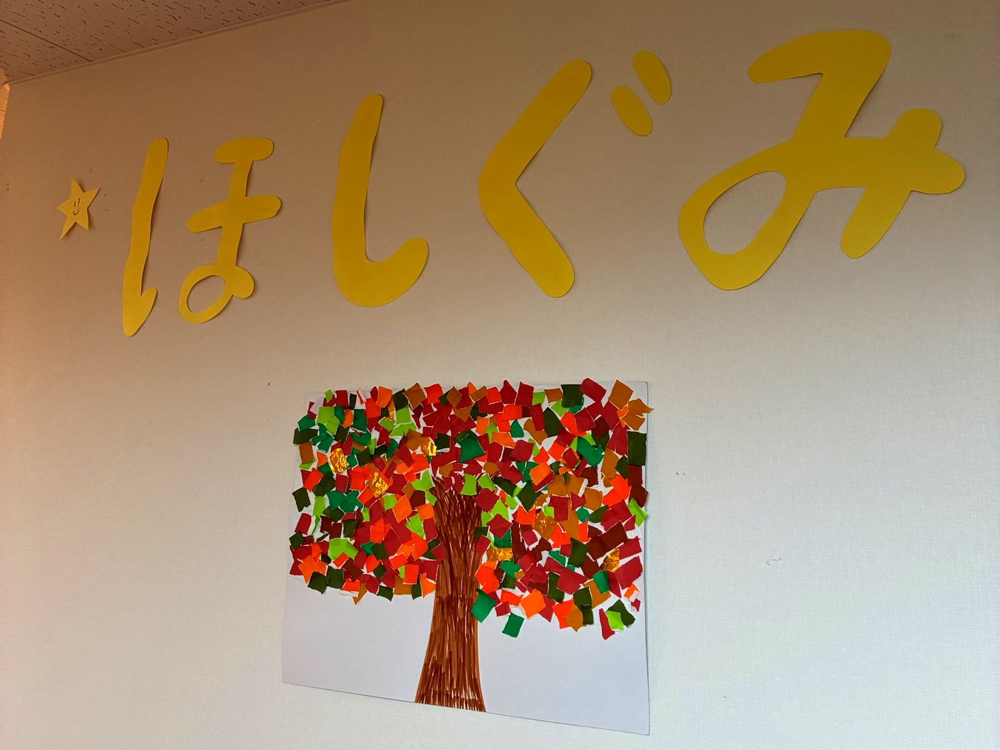
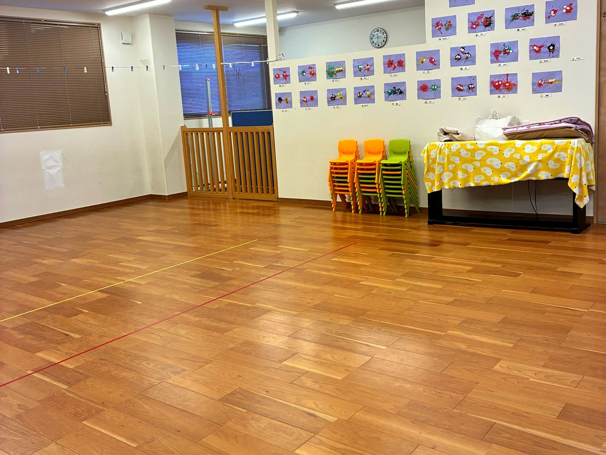

こどもと向き合う
こども一人ひとりの興味や気持ちに寄り添い、日々の育ちを大切にしています。


一人ひとりのこどもに寄り添い、
その子らしい育ちを大切にする。
かみのての保育は、そんな思いを大切にしています。
これまでのご経験で培った視点や工夫を、ぜひ聞かせてください。
こども・仲間・地域とつながる、かみのての毎日。

こども一人ひとりの興味や気持ちに寄り添い、日々の育ちを大切にしています。
職員同士で話し合い、考えながら、よりよい保育をつくっていきます。
さまざまな背景や文化にふれながら、こどもの世界を広げる保育を行います。
ライフスタイルに合わせた働き方について、一緒に考えます。
保育の中心となって、こどもたちの育ちを支える働き方です。
| 仕事内容 | 園児の保育、クラス運営、指導案の作成など |
|---|---|
| 勤務時間 | 7:00〜16:00／11:00〜20:00（休憩60分） |
| 休日・休暇 | 基本は土日祝休み・年間休日120日以上 土日祝の勤務（月1〜2回）は翌週に代休 |
ご家庭の状況に合わせて、無理のない働き方を相談できます。
| 仕事内容 | 園児の保育、クラス運営、指導案の作成など |
|---|---|
| 勤務時間 | 7:00〜20:00のシフト制 週2日から・1日4時間からOK |
| 休日・休暇 | 土日祝休み |
保育士の正社員・パートの条件です。勤務時間・日数・入職時期は、ご事情をうかがってご相談します。
保育士の条件は園の募集要項のとおりです。保育補助・栄養士・調理・看護師の募集状況は確認後に掲載します。
| 募集職種 | 保育士（正社員・パート） |
|---|---|
| 応募資格 | 必要資格・経験を確認予定 |
| 雇用形態 | 正社員・パート |
| 勤務地 | かみのて保育園・かみのて今渡保育園（岐阜県可児市） |
| 勤務時間 | 正社員：7:00〜16:00／11:00〜20:00（休憩60分） パート：7:00〜20:00のシフト制・週2日から・1日4時間からOK |
| 給与・手当 | 正社員：基本月給22万円・賞与年2回・各種手当あり パート：時給1,200〜1,400円（早朝7:00〜9:00・遅番18:00〜20:00は時給100円アップ、土日祝はさらに100円アップ） |
| 休日・休暇 | 正社員：基本は土日祝休み・年間休日120日以上（土日祝の勤務（月1〜2回）は翌週に代休） パート：土日祝休み |
| 福利厚生 | 確認予定 |
応募は、園の応募フォームから受け付けています。ほかの求人サイトからの応募は対象外です。
| 募集職種 | 保育補助（確認予定） |
|---|---|
| 応募資格 | 必要資格・経験を確認予定 |
| 雇用形態 | 確認予定 |
| 勤務地 | 岐阜県可児市／配属先は確認予定 |
| 勤務時間 | 確認予定 |
| 給与・手当 | 確認予定 |
| 休日・休暇 | 確認予定 |
| 福利厚生 | 確認予定 |
| 募集職種 | 栄養士・調理（確認予定） |
|---|---|
| 応募資格 | 必要資格・経験を確認予定 |
| 雇用形態 | 確認予定 |
| 勤務地 | 岐阜県可児市／配属先は確認予定 |
| 勤務時間 | 確認予定 |
| 給与・手当 | 確認予定 |
| 休日・休暇 | 確認予定 |
| 福利厚生 | 確認予定 |
| 募集職種 | 看護師（確認予定） |
|---|---|
| 応募資格 | 必要資格・経験を確認予定 |
| 雇用形態 | 確認予定 |
| 勤務地 | 岐阜県可児市／配属先は確認予定 |
| 勤務時間 | 確認予定 |
| 給与・手当 | 確認予定 |
| 休日・休暇 | 確認予定 |
| 福利厚生 | 確認予定 |
まずは園の雰囲気を知ることから、お気軽にご相談ください。
実際の保育の様子や、職場の雰囲気をご覧いただけます。
ご希望に合わせて、働き方について相談できます。
今後のご予定に合わせて、入職時期についてもご相談ください。
選考手順・必要書類は確認後にご案内します。
よくいただくご質問をまとめました。
ブランクのある方も、まずはお気軽にご相談ください。これまでの経験や希望する働き方をうかがいます。
希望する時間や日数、入職時期をお聞かせください。募集状況と合わせてご相談します。
在職中の方も園見学についてご相談いただけます。日時はお問い合わせください。
職種ごとの応募資格や必要書類は、確認後にご案内します。最新の募集状況はお問い合わせください。
